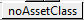

Next: Entering flows between accounts Up: Working with Minsky Previous: Entering accounts
Bank accounts must be classified as either an Asset, a Liability, or the Equity of the relevant Bank, using the drop-down menu currently labeled  at the top of each account. In this model, Reserves are an Asset of the banking sector, the accounts of ``Patient'' and ``Impatient'' are liabilities, and the ``Safe'' is the Equity of the banking system. Click on the button and this drop-down menu will appear:

Choose the relevant entry for each column, and the accounts will be properly classified when the model is simulated: